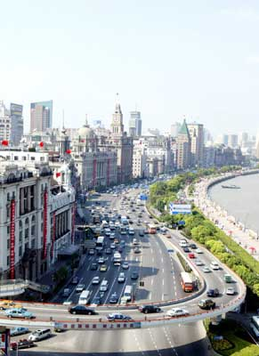

按中国目前的经济管理水平，楼市必然股市化！
2006/3/29 11:01:52

中国的经济发展有其内在的必然性，这种必然性主要就是一种惯性，在这种经济惯性下，只要不是太大的笨蛋，想把中国经济搞跨也有点难。最近楼市又有点折腾，其实都没什么大不了的。按目前中国的经济管理水平，楼市的股市化是其必然的趋势。现在股市不也走得很好，除了一些别有用心的多头在乱叫嚷，一切都很好。
楼市现在也很好，有人炒楼跳楼，这是很正常的现象。市场经济就是这样的，世界上没有不曾出现跳楼的楼市，市场经济从来就不是温情脉脉的。任何跳楼的人都因为自己的贪婪和愚蠢，没有人逼你一定要去买楼的，炒楼就更活该。
市场经济就是折腾经济，上上下下的享受，一切陷阱都是为人类的贪婪愚蠢而设置的。所以该怎样还怎样，输赢都是游戏。没有这种心态，你还市场什么？
楼市股市化的结果怎样，看看股市就明白了。而对于经济发展周期有了解的人就知道，现在的楼市情况和10几年前不都一样？想想92年的股市和楼市，就知道世界是轮回的。以前发生的事情重复发生而已，有什么大惊小怪的。有预期的人早走人了，待在里面只不过是自己有毛病。想怪谁？
真话总是难听的，但不听真话的，最终都很惨。现在骂股市的人，过段时间反转过来了，也就是踏空的一群，左右挨巴掌，楼市中也一样的。
（本文写于2005年5月25日首发强国，6月6日股市破1000点见底、楼市经过6月风暴震荡后继续强势至今。）
回复